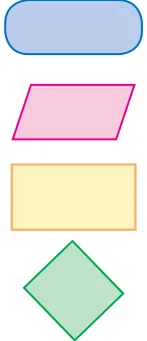
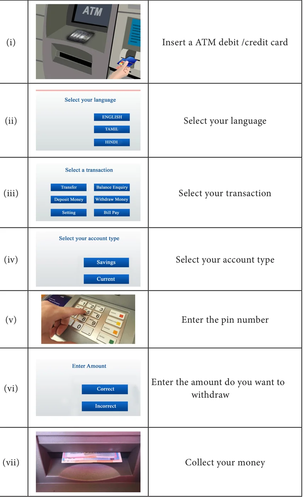
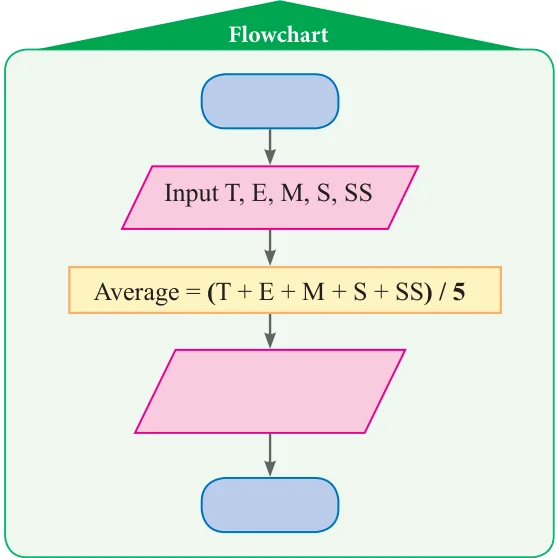
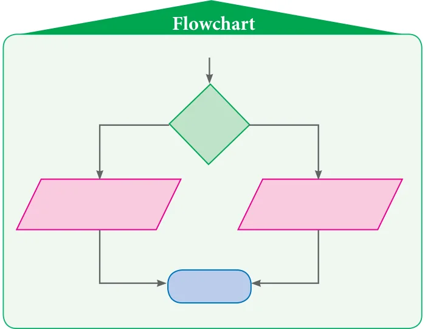

- Match the following: Symbols Uses
- (a) Input / Output

- (b) \(c = a + b\)
- (c) Start / End
- (d) \(a >= 0\)
- (e) It shows direction of flow
- The steps of withdrawing cash from your saving bank account using ATM card are
explained in the figures given below. Construct an appropriated flow chart.

- Using given step by step process to recharge mobile phone , draw a sequence flowchart. Step by Step process
- Login the mobile recharge web browser
- Select prepaid or postpaid
- Enter mobile number
- Select operator and browse plans to choose your recharge plan
- Enter amount to recharge
- Proceed to recharge
- Complete the direction of the flowchart using arrows for the flow chart explaining
the traffic rule given below.
Flowchart
Start
Input Signal
Signal = Signal \(= _{No}\) red yellow
Yes
Print Print Print
"Stop" "Wait" "Go"
End
- Complete the given flowchart, input Flowchart
names of things and check whether it is living or non - living.
- Complete the given flowchart.
- Fill in the flow chart to print the average mark by giving your I term or II term
marks as inputs.

- Construct the flow chart to print teachers comment as "very good" if your
average mark is above 75 out of 100 or else, as "still try more" can be inserted in the flow chart with earlier one.

- A merchant calculates the cost price (CP) and the selling price (SP) of the product bought
by him. Construct the flow chart to print 'PROFIT' if the selling price (SP) is more than the cost price (CP) or else 'LOSS'.